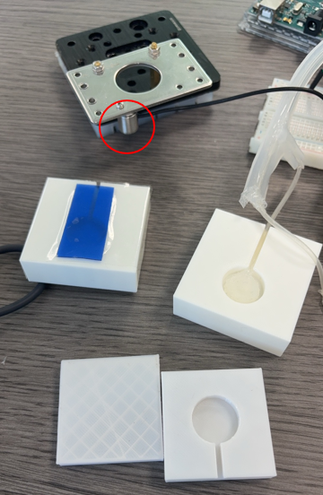
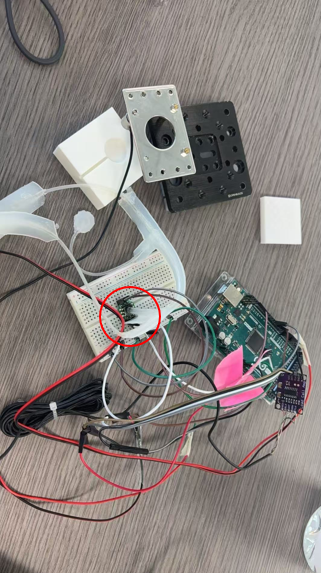
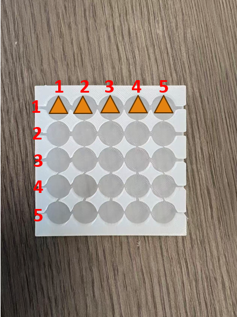
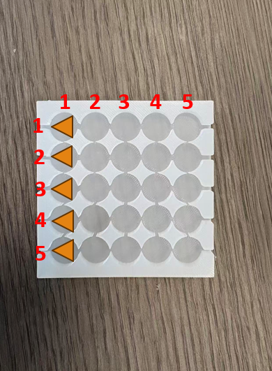
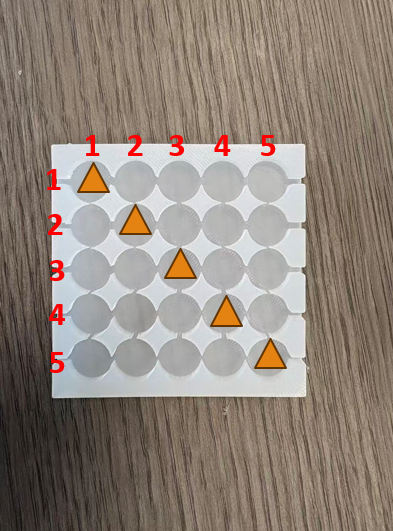
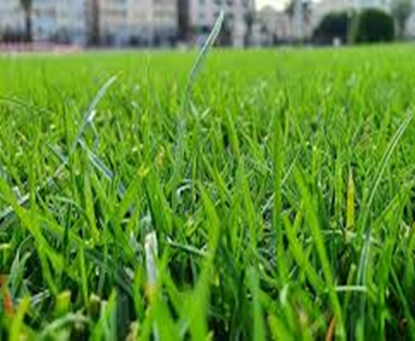
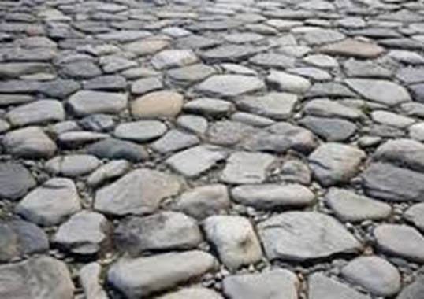

CDE4301 Innovation & Design Capstone AY25/26
VR405: Wearable Foot Haptic Interface for Terrain Simulation of VR/AR
Final Report
Clarification
The content presented in this report is a preliminary draft intended for review and feedback purposes only. It may contain inaccuracies, incomplete information, or sections that are subject to change. For illustrative purposes, some images were produced or enhanced using AI tools.Table of Contents
1. Introduction
Providing full foot haptic feedback remains one of the most significant challenges in achieving complete immersion in virtual and augmented reality systems. The human plantar surface is irregular and complex, making it difficult to replicate the sensations of walking on different terrains. Among the anatomical features of the foot, the Medial Longitudinal Arch (MLA) plays a critical role in maintaining balance and perceiving surface irregularities. This work proposes a lightweight, arch-focused pneumatic haptic system that achieves spatially discriminable foot feedback while maintaining full mobility.
To systematically evaluate the performance and perceptual effectiveness of this device, two independent user experiments were conducted, each involving 12 participants (n=12). The first experiment investigates the two-point discrimination threshold at the MLA to determine the spatial resolution limits of pneumatic stimulation. The second experiment performs a multi-dimensional texture evaluation, quantifying how users perceive varying levels of static force and vibration frequencies in terms of roughness, stiffness, and flatness.
1.1 Design Requirements
The design of a wearable foot haptic interface must satisfy several key requirements to ensure realism and comfort. The device needs to be soft and flexible to conform to the natural movement of the foot. It must also provide force feedback to simulate the feeling of pressure underfoot and vibration to reproduce textures such as rough or smooth surfaces. Furthermore, it should support natural walking gestures in VR or AR environments to avoid disrupting user mobility and immersion.
1.2 Previous Solutions
Several prior works have explored haptic feedback systems for walking simulation in virtual environments. For instance, RealWalk (Son et al., 2018) presented a system that use magnetorheological (MR) fluid actuators under the soles to change resistance and create the feeling of walking on different surfaces. As the user steps, sensors and magnetic fields adjust the fluid’s viscosity to mimic soft or firm ground in real time. Another approach, PropelWalker (Ke et al., 2023), introduced a leg-based wearable device with propeller-based force feedback for simulating walking in fluids. On each leg, the propeller is equipped with two ducted fans (one for upward thrust and one for downward) that generate airflow-based force feedback to simulate the sensation of walking through different fluids like water, mud or sand in VR. RealWalk provides high-fidelity ground contact sensations that closely mimic real surface textures, while PropelWalker offers strong kinesthetic force feedback across the legs, enhancing the sense of motion and resistance. Despite their different mechanisms, both share similar limitations—the setups are heavy, complex, and power-demanding, which can reduce comfort and practicality for extended or portable VR use.
Figure 5 (Chang et al., 2023) shows a floor-based mechanical platform that changes preload and surface stiffness to simulate different ground hardness levels. It offers strong, precise force feedback and accurately reproduces terrain stiffness by adjusting the resistance against body weight. Figure 6 (Son et al., 2018) presents a stepping haptic device that recreates terrain variation through motion cues and variable-stiffness curved origami panels. This setup enhances immersion by matching body motion with surface change. However, these two structures are large or heavy, restricting natural walking or free movement, fine foot contact and texture feedback, limiting the realism of detailed ground sensations.
2. Proposed Design
In response to these gaps, the proposed wearable foot haptic shoe device fulfills all previously stated requirements. The system combines soft material layers with pneumatic actuation to deliver both force and texture sensations. This allows users to experience localized, controllable feedback under the foot arch while maintaining comfort and freedom of movement.
2.1. System structure
Here is the structure of system. At the bottom shows the silicone support module,
which provides localized pneumatic actuation to simulate pressure on the skin.
Above it, we integrate a haptic feedback layer, where multiple air chambers independently
inflate and deflate to recreate sensations such as step motion, terrain contact, or vibration
cues. The entire unit is lightweight, flexible, and can conform to different body surfaces making
it suitable for wearable or foot-based haptic interaction. This structure allows both precise
control of tactile feedback and scalable integration for immersive VR experiences.
For the silicone module, we fabricated it using two layers: the top layer made of Ecoflex 00-30 for softness, and the bottom layer made of Dragon Skin 00-20 for structural support. After cooling down under 25 degree Celsius overnight, two parts are demolded seperately The two layers are then bonded with air tube inside using Sil-Poxy glue, forming a single flexible and airtight chamber. For the silicone support module, Dragon Skin 00-20 was used to make a single, strong base. The silicone was poured into a support 3D-printing mold and left to cure at about 25 °C overnight. After curing, the part was removed as one solid piece, with no extra glue steps. This hybrid structure allows the device to deliver both pressure-based feedback and surface conformity, ensuring comfort and realism during walking or standing in VR environments.
The size of an air chamber is 9 mm of diameter and 0.5 mm of thickness. The choice of chamber diameter aligns with the plantar mechanoreceptor receptive-field sizes reported in FeetThrough (Ushiyama & Lopes, 2023). The electrode diameter of 8 mm in FeetThrough was chosen to match the receptive-field size of plantar mechanoreceptors (SA I and FA I) on the sole. Larger diameters distribute current or pressure more evenly and prevent local pain or overstimulation, a known risk with smaller electrodes. Applying this reasoning to pneumatic chambers, a ≈ 9 mm chamber diameter similarly balances stimulus localization and comfort—large enough to evoke distinct tactile cues at the arch without sharp pressure points, yet small enough to reach discrimination thresholds near the 7–8 mm range reported by Solomonow et al. (1977). This size optimizes the trade-off between spatial resolution and user comfort for effective foot haptic feedback.
2.2. Control System
The pneumatic control system is organized into multiple channels, each responsible for
driving one air chamber. Every channel includes a small pump and two solenoid valves
—an in-valve for inflating the chamber and an out-valve for releasing air—powered by
separate 24 V and 12 V DC supplies. These components are switched through MOSFETs, which
allow the Arduino Mega 2560 MCU to control each valve and pump using PWM signals. An air pressure sensor
connected to the MCU provides continuous feedback, so the system can adjust
pressure sensor connected to the MCU provides continuous feedback, so the system can adjust
the airflow and maintain the desired pressure inside each chamber. This setup allows each
channel to inflate or deflate independently, supporting precise and responsive pneumatic
feedback across the device.
The pneumatic control system operates in three distinct modes to deliver various haptic sensations: REST, STATIC FORCE, and VIBRATION. In REST mode, both the intake and exhaust valves are closed, maintaining the chamber at ambient pressure without any actuation. STATIC FORCE mode involves opening the intake valve to inflate the chamber, generating a steady force sensation under the foot arch, while keeping the exhaust valve closed to hold the pressure. VIBRATION mode alternates intake valves between ON and OFF rapidly, creating dynamic pressure changes that produce vibration sensations. This mode allows for simulating textures and surface irregularities. By switching between these modes, the system can effectively replicate a range of tactile experiences, from firm ground contact to fine surface textures.
2.3. Technical Evaluation
The technical evaluation aims to characterize the performance of the pneumatic foot haptic
device in delivering force and vibration feedback. Key metrics include the maximum force
output, response time, and frequency range of vibration stimuli. Vibration frequency
is evaluated by applying rapid inflation-deflation cycles and measuring the resulting
oscillation air pressure.
Figure 14 shows the testing mechanism. An inflatable air chamber is fixed beneath a constraint plate,
with the applied pressure monitored by a force sensor. This setup enables precise measurement of the output force
under different input pressures. Figure 15 and Figure 16 are the fabricated test units, including 3D-printed fixtures,
silicone chambers, and the assembled testing platform. These components together verify the system’s mechanical response
and consistency under controlled conditions.


Figure 15-16: Technical Evaluation Setup (Left: Force sensor, Right: Air pressure sensor)
By systematically varying the input pressure and measuring the resulting force output, the relationship between actuation pressure and generated force was characterized. Force sensor beneath the constraint plate recorded the normal force while air pressure inside the chamber was incrementally increased from 10 kPa to 70 kPa in 10 kPa steps. Each pressure level was maintained for several seconds to allow the system to stabilize, and multiple measurements were taken to ensure repeatability and account for material compliance variations.
Figure (a) characterizes the relationship between actuation pressure and output force
of the pneumatic module. As the actuation pressure increases from 10 kPa to 70 kPa,
the measured force does not grow linearly but follows a clear quadratic trend, which is captured by the fitted polynomial
f(x) = 1.33 × 10−3x2 − 9.48 × 10−5x − 0.138.
This curvature indicates that the mechanical sensitivity of the chamber (dF/dP) becomes larger at higher pressures:
small changes in pressure near 60–70 kPa produce noticeably larger changes in normal force than the same pressure
change around 10–20 kPa. The time-domain traces at 10, 30, 50 and 70 kPa on Figure 18 further show that the chamber generates
stable plateau forces after inflation, with the peak force ranging from approximately 0.05 N at 10 kPa to about 6 N at 70 kPa.
The rise time is on the order of 1 s, after which the force remains relatively constant with only a slow decay,
indicating that leakage and material relaxation are limited over the time scale of typical haptic events.
Taken together, these results demonstrate that the module can provide a predictable and repeatable mapping
from commanded pressure to under-foot force, which is essential for reliable haptic rendering and later calibration.
Figure (b) evaluates the dynamic vibration capability of the same module by driving it with a periodic pressure
signal and measuring peak and trough pressures as a function of frequency. At low driving frequencies (10–30 Hz),
the difference between peak and trough pressure is large, meaning that the chamber volume has enough time to fully inflate
and deflate within each cycle. This produces high-amplitude pressure oscillations and therefore strong, clearly felt tactile cues,
suitable for rendering pronounced bumps or impacts. As the frequency increases beyond about 40 Hz, the amplitude of
the modulation gradually decreases and then stabilizes; the peak pressure slowly drops while the trough pressure rises,
narrowing the gap between them. This behavior reflects the combined limits of the pump, valves, and air flow: at high
frequencies the pneumatic system cannot move enough air per cycle to reach the same pressure swing. Nevertheless,
a usable modulation depth is maintained up to 100 Hz, which defines a practical operating band of 10–100 Hz. Within
this range, low frequencies can be used for strong, coarse events, while higher frequencies support finer texture‐like vibrations,
all while keeping the absolute pressure within a safe and comfortable envelope for the foot.
3. Experiment 1: Human perception on different pneumatic units
To assess the effectiveness of the foot haptic device in simulating terrain sensations, user testing is conducted. The study evaluates how well participants can perceive different ground textures and hardness levels through the pneumatic feedback while walking or standing.
3.1. Experiment Goals
The first experiment aims to investigate how well different pneumatic units can be perceived at the MLA. The user study focuses on identifying the tactile two-point discrimination threshold, which indicates how closely two pneumatic stimuli can be placed while still being felt as separate sensations. To evaluate directional sensitivity, the pneumatic units are activated along horizontal, vertical, and diagonal orientations across the arch region. By examining perception across these directions, the experiment seeks to determine the spatial resolution limits of pneumatic feedback under the foot and to understand which chamber placements are most distinguishable for haptic rendering in future designs.
3.2. Stimulus Configuration
To select an appropriate operating pressure for the pneumatic chambers, both perceptibility
and comfort were considered. Pressures below 40 kPa produced sensations that were barely
noticeable, while pressures above 60 kPa often caused discomfort during inflation.
Based on these observations and findings from prior studies indicating that two-point discrimination
thresholds are relatively independent of applied force(Vriens & van der Glas, 2002), 50 kPa was chosen as the working
pressure. This level provides clear and safe force feedback and remains within the linear
deformation range of the silicone module, ensuring stable and repeatable actuation.
A 5 × 5 stimulation grid was also adopted to provide full spatial coverage of the MLA.
This layout allows the pneumatic system to deliver localized pressure cues across different
regions of the arch, making it possible to examine how sensitivity varies across positions.
The grid structure further supports the identification of optimal chamber placements for future
design refinement, enabling more precise and efficient under-foot haptic feedback.
3.3. Experiment Procedure
The first experiment assessed tactile perception thresholds at the MLA. Stimulation was applied in horizontal, vertical, and diagonal directions to determine spatial resolution limits.



Figure 20-22: Stimulation Directions (Horizontal, Vertical, Diagonal)
Experiment 1 followed a structured procedure beginning with an initial calibration phase to ensure that each participant could clearly perceive the pneumatic stimuli. After calibration, participants completed a series of two-point discrimination (TPD) trials, presented in three stimulus directions horizontal, vertical, and diagonal. Each direction included approximately 10–15 test trials, resulting in a total session length of around two hours per participant. To maintain comfort and prevent fatigue, rest periods were provided between trial blocks. All pneumatic stimuli use air pressure of 50 kPa. During each trial, participants reported whether the perceived sensation corresponded to one-point or two-point stimulation, enabling assessment of spatial discrimination performance across the arch region.
3.4. Results and Analysis
The two-point discrimination data were analyzed using a 1-up-2-down staircase method,
which adjusts the stimulus distance based on participants’ responses to identify the point
at which two stimuli can be reliably distinguished. Each trial sequence continued until
five reversals were obtained, indicating consistent changes in perception.
To estimate the Just Noticeable Distance (JND), the last three reversal points
from each sequence were averaged, providing a stable threshold value for that direction.
This procedure was repeated across all participants and stimulus orientations, resulting
in 24 data sets in total. An example trial is shown in the accompanying plot,
where the blue line represents the changing stimulus distance, the orange markers denote
reversal points, and the dashed line indicates the final computed JND. Together,
these measures offer a quantitative assessment of the arch region’s spatial resolution
under pneumatic stimulation.
In this experiment, a 1-up-2-down staircase method was used to estimate the discrimination
threshold. For this method, the distance between the two pneumatic units becomes smaller
after two consecutive correct responses and larger after a single incorrect response.
A reversal occurs whenever the direction of the staircase changes, for example from
decreasing distance to increasing distance, or vice versa. Early reversals are often
influenced by initial guesses and adaptation, so only the last three reversals are used
to compute the final threshold, which corresponds closely to the JND.
Averaging these later reversal distances gives a stable
estimate of the minimum spacing at which two points can still be perceived as separate
stimuli at the foot arch.
The Just Noticeable Distance (JND) data across all participants were analyzed to determine if Foot Side (Left vs. Right) or Stimulation Direction (Horizontal, Vertical, Diagonal) exerted a significant influence on tactile perception at the Medial Longitudinal Arch (MLA).
A Two-Way ANOVA was conducted to evaluate the effects of Foot Side and Stimulation Direction. The summary of the mean JND values recorded during the staircase procedure is presented below:
Statistical Inference and Post-hoc Analysis
The ANOVA results revealed that Foot Side (Left vs. Right) had no statistically significant impact on perception (p = 0.437), confirming tactile symmetry. However, the Direction of stimulation was found to be an extremely significant factor ($p < 0.001$), influencing the required spacing for stimulus discrimination.
To further isolate the differences between orientations, a Tukey HSD Post-hoc Analysis was performed. The results indicate a clear perceptual gap between diagonal and axis-aligned stimuli.
Key Findings:
- Diagonal Dominance: Diagonal stimulation results in significantly higher JND thresholds compared to both Horizontal and Vertical orientations (p < 0.001), with a mean difference of up to 8.20 mm.
- Horizontal vs. Vertical: No significant difference was found between horizontal and vertical JNDs (p = 0.211), suggesting similar sensitivity along these axes.
- Design Implication: These findings validate the 32.5 mm diagonal offset used in the optimized pentagonal layout. This distance ensures that even in the direction of lowest sensitivity (diagonal), the actuators remain distinguishable.
3.5 Design Iteration and Optimization
Following the results obtained in Experiment 1 regarding the Just Noticeable Distance (JND) and spatial resolution of the Medial Longitudinal Arch (MLA), the device design was iterated to enhance both tactile accuracy and ergonomic fit. The iteration focuses on two main aspects: the optimization of the pneumatic actuator layout and the development of customized support bases for varying foot morphologies.
Based on the JND data, which indicated higher spatial resolution requirements in the central arch compared to the periphery, the actuator layout was redesigned into a more spread-out pattern.
2.4.2. Arch-Adaptive Base Design and Classification
To ensure effective haptic transmission, consistent contact between the pneumatic layer and the Medial Longitudinal Arch (MLA) is essential. Following the methodology of Rogati et al., we utilized 3D scanning technology to capture the plantar surface in weight-bearing conditions. Digital 3D scanning has been proven significantly more reliable than traditional manual casting, with an accuracy (RMSE) of less than 1.6 mm in the arch region alone.
Based on the morphological analysis derived from these high-resolution scans, we established a classification standard for the support bases. The height of the Medial Longitudinal Arch serves as the primary metric for selecting the appropriate base:
The final design integrates the JND-optimized pentagonal actuator array into these customized silicone bases. By matching the base height to the user's specific arch type, we achieve Zero-Gap Contact, which minimizes air displacement requirements and maximizes tactile fidelity.
4. Experiment 2: Multi-Dimensional Texture Evaluation
The second experiment evaluates the system's ability to render complex ground characteristics using the optimized pentagonal actuator array. The objective is to quantify how physical pneumatic actuation (frequency and pressure) maps to human perceptions of Roughness, Flatness, and Stiffness.
4.1. Experimental Design and Parameters
Experiment 2 utilizes a customized bilateral pneumatic system to investigate the relationship between physical stimuli and subjective tactile perception. The study is designed to cover the full operational range of the actuators while ensuring participant safety and data reliability:
- Static Force Trials: Stimuli range from 1 N to 5 N. A total of 15 tests (5 levels × 3 repetitions) are conducted. Note that 6 N stimuli are excluded to ensure user safety.
- Vibration Trials: Frequencies range from 10 Hz to 100 Hz. A total of 30 tests (10 levels × 3 repetitions) are performed to characterize texture perception.
- Session Duration: The complete set of 45 randomized tests is typically completed within 45 to 60 minutes, including mandatory recovery periods.
4.2. Experimental Procedure and Setup
The testing protocol follows a rigorous Stimulus-Response-Reset cycle to minimize sensory adaptation. Participants are seated comfortably with their feet positioned on the Arch-Adaptive bases, which are connected to independent pneumatic control units for the left and right sides.
As illustrated in the flowchart, the process consists of the following phases:
- Initialization: The session begins with baseline setting for the users. The baseline is when the users are at stable positions with device REST mode, corresponding to 50 score of all dimensions. Different kind of arch support is chosen to ensure zero-gap contact with the user's MLA.
- Randomized Stimulus Delivery: The system randomly selects between Static Force and Vibration trials. For Static trials, users evaluate Stiffness and Flatness; for Vibration, Roughness is added as a third dimension.
- Evaluation & Reset: Users submit their perception data via the web interface. A 30-second rest period is enforced after each trial to allow silicone relaxation and mechanoreceptor recovery.
4.3. Quantitative Results and Trend Analysis
The perceptual data collected from the 45 randomized trials were aggregated to visualize the relationship between physical actuation parameters and subjective tactile experience. The following boxplots illustrate the distribution of participant scores across different stimulus levels.
Static Force Perception (1 N – 5 N)
Vibration Perception (10 Hz – 100 Hz)
Discussion of Perceptual Trends
Analysis of the mean trend lines (RED) reveals distinct psychophysical patterns for each actuation mode:
- Static Force Impact: As the static load increases from 1 N to 5 N, there is a positive linear correlation with both perceived stiffness and flatness. Higher pressures (4 N–5 N) are consistently rated as "Harder" and "Flatter," confirming that increased pneumatic intrusion into the MLA effectively simulates solid ground contact.
- Vibration Frequency Influence: Interestingly, increasing the vibration frequency from 10 Hz to 100 Hz results in a downward trend across all three metrics. Low-frequency stimuli (10–30 Hz) are perceived as significantly Rougher and Stiffer, likely due to the larger mechanical displacement of the silicone chambers at lower speeds.
- High-Frequency Damping: At frequencies above 80 Hz, participants reported a notable drop in perceived roughness and stiffness, describing the sensation as a "fine hum" rather than a distinct texture. This aligns with our technical evaluation showing reduced modulation depth at high frequencies.
- Perceptual Stability: The relatively tight interquartile ranges at extreme stimuli (1 N and 100 Hz) suggest higher consensus among users for "Soft" and "Smooth" extremes, while mid-range stimuli show higher variance in subjective interpretation.
4.4. Statistical Significance: Friedman Test Analysis
To validate whether the variations in perception scores across different stimulus levels were statistically meaningful, a Friedman Test was performed. This non-parametric test was chosen to account for the ordinal nature of the subjective 0–100 scores and the repeated-measures design of the study.
Detailed Statistical Interpretation
The analysis yielded highly significant results ($p < 0.001$) for most perceptual categories, rejecting the null hypothesis that stimulus levels have no effect on user perception, with the notable exception of Stiffness under static pressure.
- Static Force Sensitivity: For Flatness and Roughness, the results indicate that plantar mechanoreceptors are sensitive to incremental pressure changes. However, Stiffness (p = 0.106) did not show a statistically significant trend across the 1–5 N range, suggesting that users may find it difficult to distinguish material hardness solely through varying levels of static force without dynamic cues.
- Vibration Frequency Modulation: The Flatness and Roughness dimensions showed the highest Chi-square values (χ² = 177.64 and 144.18 respectively), proving that frequency is the dominant driver for texture simulation. Piecewise comparisons revealed that the most significant perceptual shifts occur in the mid-frequency range (40–60 Hz), identifying this as a critical zone for simulating tactile transitions.
- Perceptual Boundaries: The significant p-values and subsequent pairwise analysis for Vibration / Stiffness (χ² = 92.51) indicate that frequency also modulates the perceived "firmness" of a surface, especially as frequencies approach the 80–90 Hz range, where a distinct change in stiffness perception was recorded (p = 0.027).
- System Reliability: The high consistency of these low p-values (excepting static stiffness) confirms that the Arch-Adaptive Base successfully maintained stable skin-device contact, allowing users to reliably distinguish between different simulated terrain qualities across a wide range of mechanical outputs.
The perceptual data reveals distinct psychophysical patterns that guide the mapping of physical pneumatic stimuli to virtual surfaces. By correlating our results with established research on plantar vibration, we can define how frequency and force influence the realism of different terrains.
- Low-Frequency and Stiffness (10–30 Hz): Our evaluation shows that low-frequency stimuli are perceived as rough and hard. This aligns with findings that low-frequency forces are primarily sensed by Slow-Adapting (SA) receptors and Golgi organs, which contribute to the sensation of local pressure and surface resistance. In VR, these parameters are mapped to high-friction or solid surfaces like Gravel or Rocky Terrain.
- High-Frequency and Compliance (80–100 Hz): As the frequency increases, the perception shifts toward smooth and soft characteristics. High-frequency vibrations primarily target Fast-Adapting (FA) type II receptors, which are highly sensitive to vibromechanical stimuli. Research suggests that increased vibration intensity can create a "compliance illusion," making a rigid surface feel more deformable. Thus, high-frequency "hums" are utilized to simulate compliant materials like Sand or Grass.
- Static Force and Solidity: The positive linear correlation between static load (1 N to 5 N) and perceived flatness ensures that increased pneumatic intrusion is interpreted as solid ground contact. This allows the system to differentiate between a firm Stone Path and softer underlays.
- Mapping Strategy: To maximize immersion, Gravel is rendered using low-frequency, high-amplitude bursts to evoke coarse texture, while Sand utilizes high-frequency modulation to simulate the subtle displacement and "softness" of granular materials.
5. VR Integration and Presence Study
Following the quantitative perceptual mapping established in Experiment 2, this chapter evaluates the Cross-Modal Consistency of the device within a dynamic virtual environment. By integrating the hardware into a Unity-based simulation, we verify if targeted pneumatic feedback to the Medial Longitudinal Arch (MLA) significantly enhances immersion, realism, and the sense of physical presence beyond visual cues alone. Furthermore, we explore how these synchronized tactile sensations translate into practical solutions for professional training, medical rehabilitation, and architectural design.
5.1. VR Environment and Synchronized Feedback
A virtual environment was developed in Unity featuring five distinct zones: a Yoga Mat / Carpet, Grassland, Gravel Path, Rocky Terrain, and Concrete Path. As the user moves within the VR space, their gait is tracked, and the pneumatic control system triggers the corresponding texture pattern (Vibration or Static) in real-time.
The study utilizes a Within-Subject Design where participants navigate a multi-terrain virtual world developed in Unity. The system architecture bridges the virtual and physical worlds through a real-time communication pipeline:
- Unity Terrain Engine: Four distinct zones (Beach, Grass, Gravel, Rocky) are mapped with specific "Haptic Metadata".
- Gait Tracking: The user's virtual position and step phase (Stance vs. Swing) are monitored. Tactile stimuli are only triggered during the Stance Phase to maintain biological synchrony.
- Hardware Loop: Unity sends serial commands to the Arduino Mega 2560, which alternates between REST, STATIC, and VIBRATION modes within milliseconds.
5.2. VR System Setup and Hardware Integration
The integration of the wearable haptic device with the virtual environment is achieved through a real-time bilateral hardware loop. This setup ensures that the physical sensations delivered to the Medial Longitudinal Arch (MLA) are perfectly synchronized with the user's visual perception and movement within Unity.
The system architecture consists of the following key components to facilitate seamless connectivity:
- Communication Pipeline: Unity serves as the central engine, sending serial commands via a high-speed USB interface to the Arduino Mega 2560 microcontroller.
- Haptic Metadata Mapping: Each terrain in the virtual scene is tagged with specific haptic metadata. As the user enters a "Gravel" or "Sand" zone, the engine fetches corresponding PWM signals for the intake and exhaust valves.
- Trigger Mechanism: To maintain biological realism, the system utilizes gait-phase detection. The pneumatic actuators are only triggered during the Stance Phase (foot contact) and return to REST mode during the Swing Phase to prevent sensory ghosting.
- Physical Interface: The participant is seated or standing on the Arch-Adaptive Bases, which are directly plumbed into the pneumatic control tray containing the solenoid valves and MOSFET drivers.


Figure 43: Unity-rendered environments (Beach, Grass, Gravel) configured for real-time haptic triggering.
5.3. Application Scenarios
The proposed wearable foot haptic interface demonstrates strong potential across multiple application domains beyond gaming and entertainment. By leveraging its dual-mode design, where Static Force and Vibration act as independent channels, the system delivers task-specific tactile feedback tailored to complex real-world scenarios.
5.3.1. Immersive VR Training for High-Risk Environments
In professional VR-based training for firefighting, military operations, or disaster response, the device serves as a critical tool for environmental assessment. The Static Force mode accurately simulates ground stiffness, allowing trainees to distinguish between stable surfaces and weak structural supports through their foot arch. Simultaneously, the Vibration mode represents surface irregularities such as loose debris or gravel. These foot-based tactile cues significantly improve situational awareness, enabling users to rely on physical sensations to make safer decisions in simulated high-risk scenarios.
5.3.2. Medical Rehabilitation and Sensory Augmentation
The system offers a novel approach to clinical rehabilitation for patients struggling with gait disorders, balance impairments, or reduced plantar sensitivity. By providing Static Force feedback, the device offers physical cues that reinforce correct weight distribution and foot-ground interaction. Furthermore, Vibration feedback functions as a form of sensory augmentation to guide step timing or correct improper walking patterns. By targeted stimulation of the medial longitudinal arch, the device enhances sensorimotor loops, which is essential for improving balance control and overall walking stability in therapeutic settings.
5.3.3. Interactive Architectural Design and Material Evaluation
In the field of architecture, this technology enables designers and clients to experience flooring materials within a virtual walkthrough long before physical construction begins. The Static Force mode effectively conveys differences in material stiffness, differentiating between hardwood, concrete, or soft carpet underlays. Meanwhile, the Vibration mode simulates specific surface textures and micro-irregularities, such as the grout lines of tiles or rough stone finishes. This allows users to "feel" virtual spaces intuitively, supporting more informed evaluations of comfort, usability, and aesthetic material selection.
6. Conclusion
This project presents a wearable foot haptic interface that enhances terrain perception in VR/AR by delivering localized pneumatic feedback to the Medial Longitudinal Arch (MLA). The system combines soft silicone structures with multi-channel pneumatic actuation to provide both static force and vibration feedback while maintaining flexibility and user mobility.
Technical evaluation shows a stable and predictable pressure–force relationship and a usable vibration bandwidth of 10–100 Hz. User studies further validate the system’s perceptual effectiveness, with JND-based results revealing directional sensitivity and guiding an optimized actuator layout. Additional experiments demonstrate clear correlations between actuation parameters and perceived roughness, stiffness, and flatness.
Compared to existing bulky solutions, the proposed design offers a lightweight and scalable approach for immersive foot-based haptics. However, limitations such as pneumatic response speed, limited participant size, and partial foot coverage remain.
Future work will focus on improving actuation speed, expanding to full-foot feedback, and developing adaptive control strategies for personalized haptic experiences.
References
- Chang, W., Je, S., Pahud, M., Sinclair, M., & Bianchi, A. (2023). Rendering perceived terrain stiffness in VR via preload variation against body weight. IEEE Transactions on Haptics, 16(4), 616–621.
- Ke, P., Cai, S., Gao, H., & Zhu, K. (2023). PropelWalker: A leg-based wearable system with propeller-based force feedback for walking in fluids in VR. IEEE Transactions on Visualization and Computer Graphics, 29(12), 5149–5164.
- Son, H., Gil, H., Byeon, S., Kim, S.-Y., & Kim, J. R. (2018). RealWalk: Feeling ground surfaces while walking in virtual reality. ACM.
- Strzalkowski, N. D. J., Triano, J. J., Lam, C. K., Templeton, C. A., & Bent, L. R. (2015). Thresholds of skin sensitivity are partially influenced by mechanical properties of the skin on the foot sole. Physiological Reports, 3(6), e12425.
- Ushiyama, K., & Lopes, P. (2023). FeetThrough: Electrotactile foot interface that preserves real-world sensations. Proceedings of the 36th Annual ACM Symposium on User Interface Software and Technology (UIST ’23), 1–11. https://doi.org/10.1145/3586183.3606808
- Visell, Y., Giordano, B. L., Millet, G., & Cooperstock, J. R. (2011). Vibration influences haptic perception of surface compliance during walking. PLoS ONE, 6(3), e17697. https://doi.org/10.1371/journal.pone.0017697
- Vriens, J. P. M., & van der Glas, H. W. (2002). The relationship of facial two-point discrimination to applied force under clinical test conditions. Plastic and Reconstructive Surgery, 109(3), 943–952.
- Zhang, Z., Xu, Z., Emu, L., Wei, P., Chen, S., Zhai, Z., Kong, L., Wang, Y., & Jiang, H. (2023). Active mechanical haptics with high-fidelity perceptions for immersive virtual reality. Nature Machine Intelligence, 5, 643–655.
- Smith, A. (1776). An inquiry into the nature and causes of the wealth of nations. W. Strahan and T. Cadell.
- https://www.straitstimes.com/singapore/new-scdf-training-suits-use-virtual-reality-to-create-immersive-scenarios
- https://archicgi.com/cgi-news/virtual-reality-for-architects-creation-uses/
- https://neurorehabvr.com/blog/vr-for-older-adults-rehab